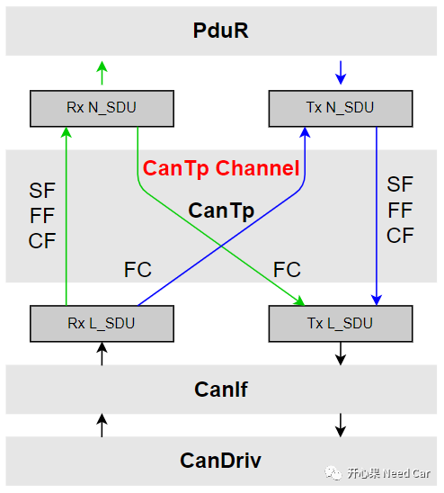
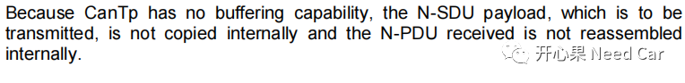
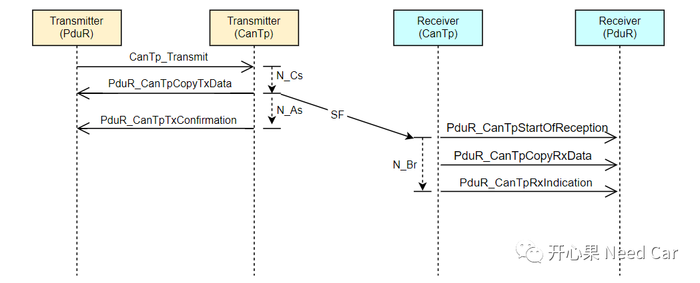

开心果 Need Car · 2022-12-18T12:42:00+08:00 · 微信原文
工程中，诊断功能必不可少，不管是开发还是测试，占据着很大的人力资源，足见其重要性。所以，更好的理解诊断，就需要不断地积累诊断的工程细节问题。本文，着重讨论CanTp的Channel和Connection概念。
1、什么是Connection
Autosar规范中，对Connection的具体解释如下：A transport protocol session,either is a transmission or a reception session on a N-SDU.
解释：Connection是一个N-SDU的发送或者接收协议会话。理解没？答：我没太理解。但是有一个词很重要，即："or"，就是说，这个会话要么处于接收状态，要么处于发送状态。这与诊断的"乒乓"交互规则相对应。
（一）Channel
理解"Connection"，先从CanTp的"Channel"说起。CanTp是软件抽象模块，也是ISO 15765-2规范的具体实现。CanTp处于中间模块，向上传递接收到的数据，向下发送上层的请求（诊断响应），而这个向上或者向下的Path需要Channel搭建。在CanTp层，"Channel"可以创建多个，当需要传输SF（Single Frame）、FF（First Frame）、CF（Consecutive Frame）、FC（Flow Control）时，需要找到可用的Channel，进而connect上/下软件模块。CanTp Channel如下所示：

2、Connection的创建和释放时机
Connection的创建和释放与Buffer相关，而CanTp是没有缓存数据能力的，只能将接收到的数据或者上层请求发送的数据传送给对应的上层或者底层。Autosar中，对CanTp处理N-PDU的描述如下所示：


（2）如果目标上层有可用的缓存区，调用PduR_CanTpCopyRxData()接口将数据Copy到目标上层，也意味着Connection的建立；
注意：CanTp会在已经建立连接的N-SDU中查找是否此N-SDU处于发送状态，如果处于发送状态，则Connection失败。
往期精彩回顾